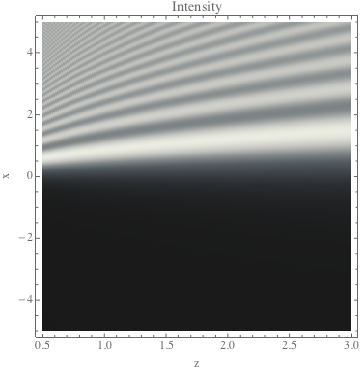
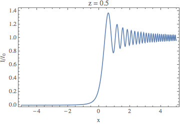
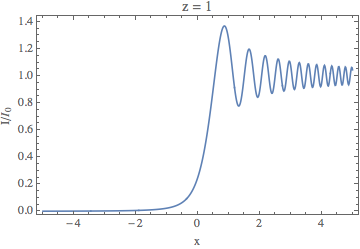
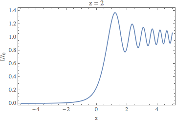
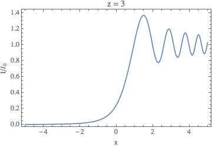

Mikhail Gaerlan
16 September 2015
When a plane wave is partially blocked by a straight edge, the intensity of of the wave at a point (x, z) is given by
$\displaystyle{I=\frac{I _0}{8}\left([2C(u)+1]^2+[2S(u)+1]^2\right)}$
$\displaystyle{u=x\sqrt{\frac{2}{\lambda z}}\quad C(u)=\int _0^u\cos\left(\frac{1}{2}\pi t^2\right)dt\quad S(u)=\int _0^u\sin\left(\frac{1}{2}\pi t^2\right).}$





A value of N = 100 was found to obtain accurate results.